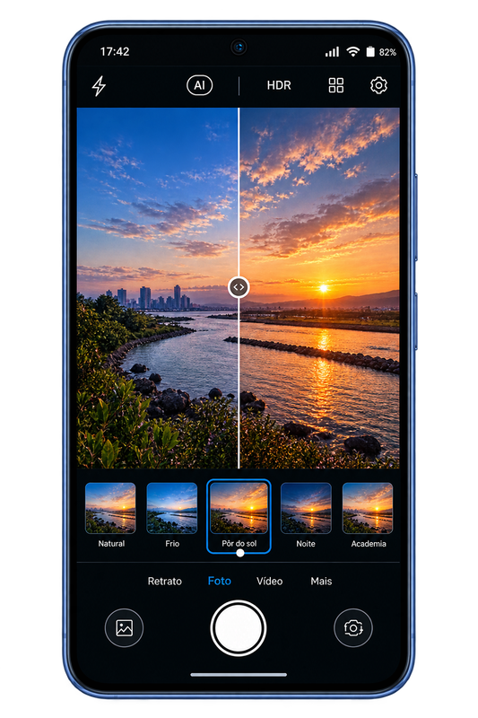
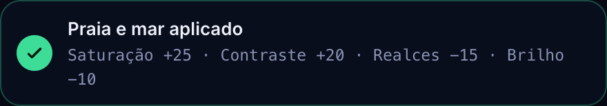

Ao ar livre
JoviSmartFilter
Adaptatividade inteligente de filtros para ambientes
A câmera entende o ambiente e ajuda o usuário a escolher o filtro ideal. Você diz onde está — ela mostra, em português, o que mudou na foto.
- ambientes mapeados
- 14
- parâmetros com escala
- 7
- toque para trocar
- 1
O desafio
Os celulares atuais, incluindo os da marca Jovi, possuem diversos filtros nativos na câmera, porém:
- Muitos usuários não sabem qual filtro usar em cada ambiente;
- O excesso de opções gera indecisão;
- As fotos podem ficar com aparência artificial ou mal ajustadas;
- Usuários não entendem termos técnicos como: Dramático quente, Vibrante…
ResultadoExperiência confusa e pouco prática.

Nossa solução
Criamos um sistema de Botões de Adaptatividade Inteligente. Ao invés de escolher filtros técnicos, o usuário escolhe o ambiente em que está — 14 ambientes em quatro categorias. Cada um é um conjunto fechado de valores, calibrado por situação, com o peso de cada parâmetro declarado.
Objetivo: tornar a câmera mais intuitiva, rápida e inteligente.
| Ambiente | Exposição | Brilho | Contraste | Saturação | Temperatura | Sombras | Realces |
|---|
Jornada do usuário
- 1
O usuário abre a câmera.
Sem grade de filtros: só o visor, o obturador e o ambiente atual.
- 2
Seleciona o ambiente atual.
Ou aceita a sugestão da detecção, que mostra o grau de certeza.
- 3
Toca no ambiente — o efeito aplica na hora.
Não existe botão de confirmar.
- 4
Ajusta se quiser; a câmera mostra o que mudou.
Iluminação, brilho, contraste, temperatura e outros parâmetros, cada um com escala.
Cada ambiente, um resultado diferente
Toque na foto para ver a mesma cena sem filtro.
Ambiente fechado
Cinema
Ambiente fechado
Academia
Imagens do protótipo com o preset de cada ambiente aplicado sobre as cenas de demonstração Orla ao meio-dia, Rua à noite e Café. Os valores são os quatro maiores ajustes, como no recibo da câmera.
A câmera presta contas
Depois de cada mudança, um recibo mostra o que foi aplicado, em números e em português. E o comparador põe a mesma cena lado a lado, sem e com filtro.

Sem filtro
Com filtro
Detecção que pode ser auditada
Nada de caixa-preta. Cada ambiente tem uma assinatura de sensores, e a sugestão é a menor distância entre a leitura atual e essas assinaturas. Por isso o motor sempre consegue explicar a escolha em uma frase — e o usuário pode discordar dele.
- Luz ambiente
- Separa externo, interno e noite. Pesa 38% na decisão, porque é o sinal mais estável.
- Temperatura de cor
- Distingue lâmpada quente de fluorescente fria e de luz natural. Pesa 22%.
- Composição do quadro
- Proporção de verde e de céu no terço superior. Separa parque de praia e de montanha.
- Horário
- Só entra como ajuste fino: às 18h, praia vira pôr do sol; ao meio-dia, não.
Quando o navegador libera a câmera, o protótipo amostra o quadro num canvas de 48 por 48 pixels e deriva as mesmas grandezas que o sensor do aparelho entregaria. Sem permissão, as cenas de demonstração carregam leituras equivalentes, e o motor roda exatamente igual.
Como está construído
HTML5 semântico, CSS3 autoral, JavaScript ES6+, Tailwind CSS compilado e GSAP para as animações. Sem framework e sem build: as bibliotecas ficam dentro do projeto, que abre offline, direto do arquivo.
- index.html
- a solução
- app.html
- protótipo da câmera
- slides.html
- apresentação
- js/core/dados.js
- entidades do modelo de dados
- js/core/motor.js
- presets, filtros e detecção
- js/app/app.js
- interface da câmera
As entidades da modelagem aparecem no código com o mesmo nome: PARAMETRO_AJUSTE, AMBIENTE, CONFIGURACAO_AMBIENTE, PRESET_USUARIO e FOTO com seu metadado de captura.
Aponte para uma janela, para o teto ou para um canto escuro.
Libere a câmera do seu aparelho e veja a detecção mudar de opinião junto com a luz.